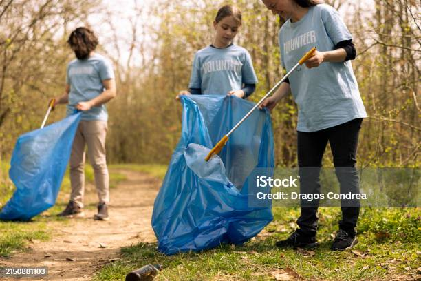

Latar Belakang
Masalah sampah yang terus meningkat menjadi ancaman serius bagi lingkungan. Kurangnya kesadaran masyarakat dan keterbatasan akses informasi membuat sampah yang bisa didaur ulang justru mencemari alam. EcoCycle hadir untuk menjawab tantangan ini melalui pendekatan edukatif dan penghargaan berbasis teknologi.


Tujuan
- Meningkatkan kesadaran dan edukasi tentang pentingnya daur ulang.
- Memberikan insentif bagi masyarakat yang aktif mengelola sampah.
- Menghubungkan pengguna dengan lokasi dan komunitas daur ulang.
- Mendorong gaya hidup ramah lingkungan secara berkelanjutan.
- Mengurangi jumlah sampah yang tidak terkelola dengan baik.


Pendekatan
Di EcoCycle, kami percaya bahwa menjaga lingkungan adalah tanggung jawab bersama yang bisa dimulai dari langkah kecil: mendaur ulang. EcoCycle hadir sebagai sebuah platform yang bertujuan untuk meningkatkan kesadaran dan motivasi masyarakat dalam menjaga kebersihan lingkungan melalui pengelolaan sampah yang lebih bijak dan bertanggung jawab.
Kontak Kami
- Telepon: (021) 1234-5678
- Email: support@EcoCycle.com
- Instagram: @EcoCycle
Kami selalu siap membantu Anda dalam segala kebutuhan terkait produk dan layanan kami. Jangan ragu untuk menghubungi kami!